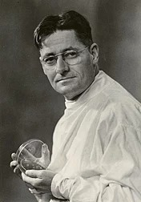

Howward Florey (1898-1968) was an Australian
pharmacologist and pathologist who shared the Nobel prize
in physiology or Medicine in 1945 with Ernst Chain and
Alexander Fleming for his role in the development of the
antibiotic penicillin. While Fleming received most of the credit
for the drug's discovery, it was Florey and his team at
University of Oxford inEngland who developed techniques for
growing, purifying and manufacturing, it, tested it on
animals and carried out the first clinical trials, Later trials in
Britain, the United States and North Africa were highly successful. In addition to
his work on pencillin. Florey studied other antibiotics, including lysozyme and the
cephalsoporins, and researched contraception. He was elected President of the
royal Society in 1960, became the provost of The Queen's College at Oxford in 1962,
and served as teh chancellor of the Australian National University From
1965 untl his death. Florey's discoveries are estimated to have saved more
than 80 million lives. (Full article...)

Recently featured: South Asian river dolphin.
The kink's 1965 Us tour. Second
Battle of independence
Archive. By email. More featured articles. About